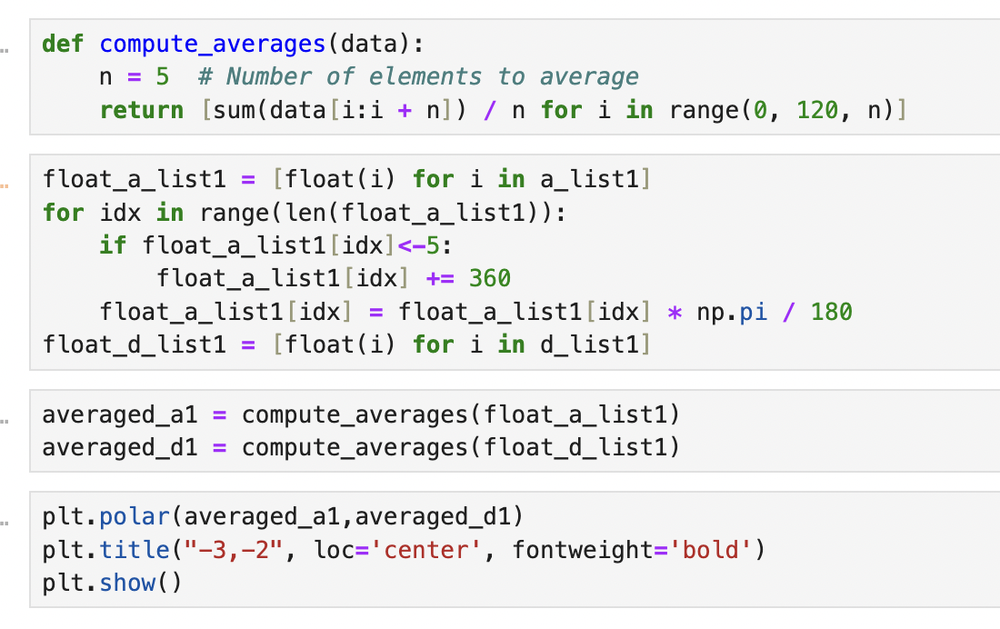
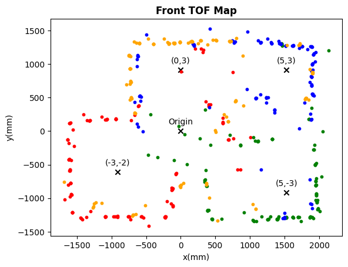
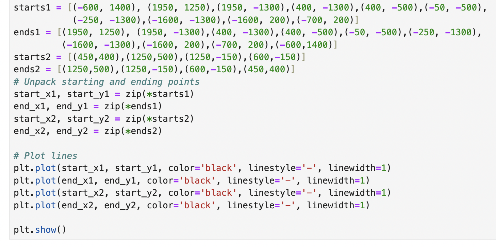
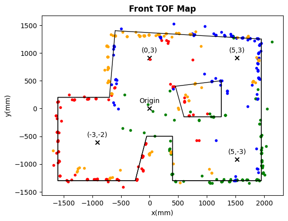

Introduction
The purpose of this lab is to create a detailed map of a static environment, specifically the front area of our lab room. This map will include the coordinates of all walls and boundaries within the space. The resulting x-y coordinate mapping can serve as a foundation for future localization and navigation tasks, enhancing the robot's ability to navigate and interact with its environment.
Parts required
- 1 x Fully assembled robot, with Artemis, ToF sensor, and an IMU.
Orientation Control
Background
To create a detailed map of the environment, our robot needs to measure distances to the walls in all directions. Given the range limitations and the potential for false readings from the Time-of-Flight (ToF) sensor when distances change too drastically during a reading, we opted to place the robot at several marked locations around the lab. At each location, the robot spins around its axis while collecting ToF readings. This approach reduces the required measurement range and ensures the ToF sensor is consistently aimed at a fixed point in space, thereby improving accuracy.
Since our angular PID works really well at Lab6, we choose to utilize the design and control the robot to do on-axis turns in small, accurate increments.
while (central.connected()) { //Read command data read_data(); sensor_IMU(); if(start){ if(angle<360 && (a_difference<=1.5 && a_difference>=-1.5)){ stop_motor(); for(int i = 1; i<=num_read; i++){ sensor_IMU(); sensor_TOF(); if(map_index<mapdata_size){ store_map_data(i,angle); map_index ++; } } angle += increment; setangle = angle; a_difference = 0; a_d_old = 0; a_d_sum = 0; a_d_derivative = 0; } sensor_IMU(); A_PID(); if(array_index<arraysize){ store_ori_data(); array_index ++; } } else { angle = 0; array_index = 0; a_d_sum = 0; stop_motor(); } }
The video below demonstrates the robot's performance. The robot operates effectively, as evidenced by its accurate rotation angles, smooth rotation, and minimal displacement around its center axis.
Readings
In order to fully cover the arenam, I put the robot at four corners of the room to collect the data. The four locations are given as coordinates relative to the origin in the middle of the arena.
- (-3, -2) ft
- (5, 3) ft
- (5, -3) ft
- (0, 3) ft
After collecting distance measurements from each location, I transmitted the data via BLE for later analysis. To evaluate the raw results of the mapping routines, I plotted the average data for each location on polar axes. The visualizations showed that the readings generally aligned with expectations: clear patterns emerged along the nearest boundaries, while readings in more open spaces were less consistent.
Transformations
The data we collected is the distance between the robot r and the wall and the rotation angle theta. To convert this to (x,y) coordinate, we multiple r with cos(theta) to get the y coordinate and multiple r with sin(theta) to get the x coordinate. In addition, the front sensor is located about 2.5 inches front of center. I applied this offset to the distances measured by each sensor during mapping, and transformed the final distances into the global arena coordinates.
When all the data is combined, the result is a comprehensive map of the arena as captured by the ToF sensors from four different scanning locations. Each location is represented by a distinct color, indicating the data collected at that position.
Edges
To facilitate easier modeling, a line-based map is manually created by drawing lines on the merged map and recording their start and end points. The resulting line-based map, overlaid on the merged map, is shown below.
 Conclusion
The mapping works really well due to the accurate angular PID control. The collected data is very accurate, making it reliable for use in localization and navigation within the mapped environment.